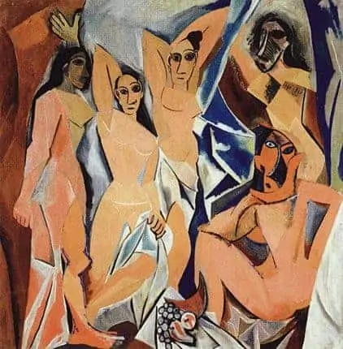
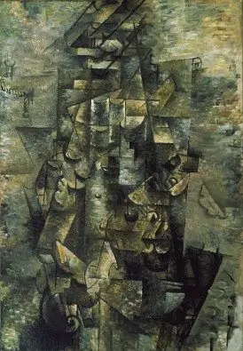
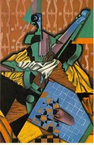
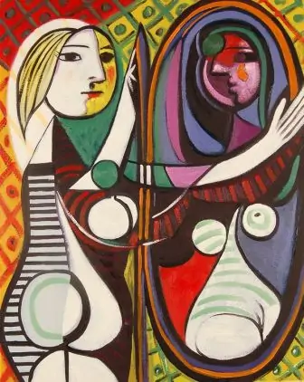

立体主义
立体主义是由毕卡索和布拉克于20世纪初在法国发展起来的艺术运动。这种风格突破了传统的透视法则，通过分解和重组物体，展现多个视角。它对现代艺术有深远的影响，特别是在形式和结构的处理上。
艺术家介绍
罗兰珊
巴黎画派中的牝鹿：罗兰珊 Marie Laurencin 1883 ~ 1956 France
玛莉. 罗兰珊出生于巴黎，1907 年开始，其作品在独立艺术家作品展览（ Independants ）上展出。 1924 年，她为俄罗斯芭蕾舞团担任装饰和服装设计，1928 年为法兰西剧院担任设计。
早期的作品中可看出印象派、新艺术甚至野兽派对她的影响，但是单纯化形式与平面性画风的尝试，简洁的线条更富表现力，以优雅和谐的颜色刻画年青妇女和儿童而著称。
配合独特的银灰、水蓝、玫瑰色等水彩般透明度的用色，勾勒出肌肤雪白、身材纤细、双眼澄澈黑白分明、表情忧郁的女性人物典型，始确立其独有的女性立体主义风格。
梅尔魏契
立体派：梅尔魏契 Kasimir Malevich 1878 ~ 1935 Russian
梅尔魏契 MALEVICH Kasimir （或译马勒维奇 ），俄国画家，和 Mondrian 同为几何抽象画派的先驱，出生于基辅附近，在基辅和莫斯科学院学习。
他先是受到后期印象派和野兽派的影响，后来他又结识了拉里昂诺夫及俄国先锋派诗人，在他们的帮助之下，于 1915 年起草了《至上主义宣言》，也称为“绝对主义”。
作品赏析
巴勃罗·毕加索的《阿维尼翁少女》
《阿维尼翁少女》是巴勃罗·毕加索于1907年创作的一幅画作。标题的意思是阿维尼翁的年轻女士，这幅画的原标题是阿维尼翁的妓院。这位西班牙艺术家描绘了五名裸体女妓。
乔治·布拉克 （Georges Braque） 的《拿着吉他的人》
《拿着吉他的人》是乔治·布拉克（Georges Braque）于1912年创作的一幅画。这幅画中描绘的作品通常被称为分析立体主义。艺术家用钉子和绳索来渲染一个弹吉他的男人。这幅画的尺寸为 116.2 x 80.9 厘米。
胡安·格里斯（Juan Gris）的小提琴和棋盘
《小提琴和棋盘》是胡安·格里斯（Juan Gris）于1913年创作的一幅画。这幅画描绘了格里斯的品质，游客不得不密切关注这幅画。这幅画的尺寸为 100 x 65 厘米。
巴勃罗·毕加索（Pablo Picasso）的《镜子前的女孩》
《镜前的女孩》是巴勃罗·毕加索于1932年创作的一幅画。这幅画是众所周知的毕加索的杰作，也是对女孩和她心爱的人的诠释。这幅画中的女孩是由巴勃罗的妻子描绘的。